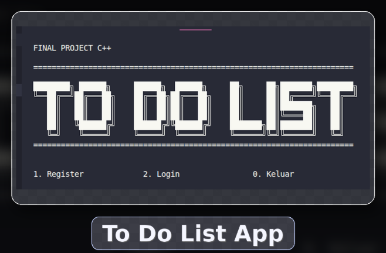

Proyek ini merupakan aplikasi sederhana berbasis web untuk membuat daftar tugas harian.
Pembuatan program ini untuk mencatat kegiatan sehari-hari untuk meningkatkan produktivitas.
Kembali ke Beranda